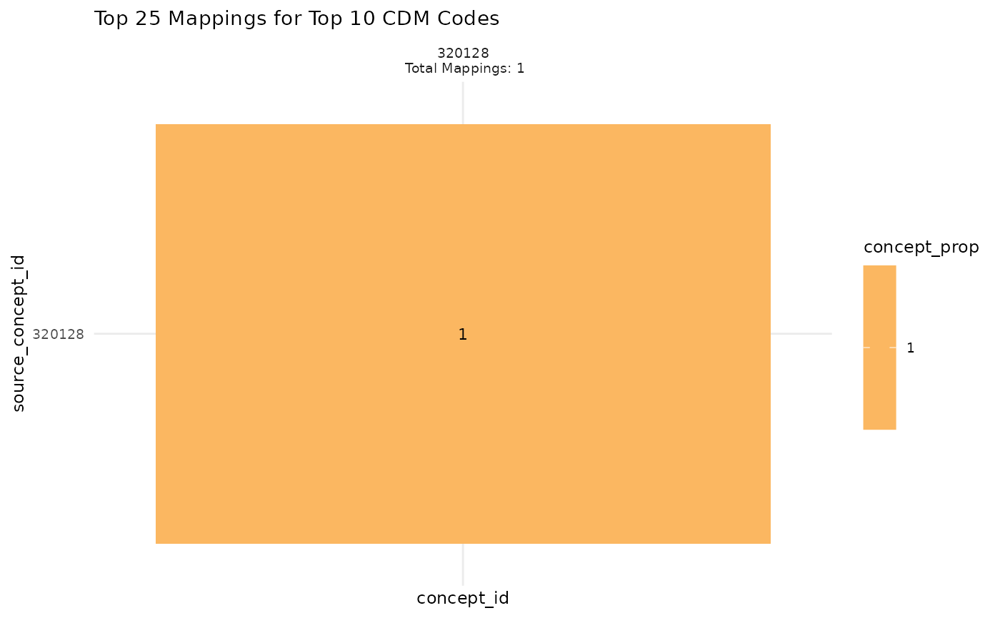

Using the tabular output generated by scv_process, this function will build a graph to
visualize the results. Each function configuration will output a bespoke ggplot. Theming can
be adjusted by the user after the graph has been output using + theme(). Most graphs can
also be made interactive using make_interactive_squba()
Usage
scv_output(
process_output,
code_type,
filter_concept = NULL,
filter_mapped = NULL,
num_codes = 10,
num_mappings = 25,
vocab_tbl = NULL,
large_n = FALSE,
large_n_sites = NULL
)Arguments
- process_output
tabular input || required
The tabular output produced by
scv_process- code_type
string || required
A string identifying the type of concept that was been provided in the
concept_set. This should match whatever was provided when executing thescv_processfunction.Acceptable values are
cdm(the standard, mapped code that is included in the CDM) orsource(the "raw" concept from the source system)- filter_concept
(integer or string) or vector || defaults to
NULLAn integer/string (depending on the data model) or vector of concepts (as provided in the
concept_setinscv_process) that should appear in the output. This parameter is required for the following check types:Single Site, Anomaly Detection, Cross-SectionalMulti-Site, Anomaly Detection, Cross-SectionalMulti-Site, Exploratory, LongitudinalSingle Site, Anomaly Detection, LongitudinalMulti-Site, Anomaly Detection, Longitudinal
- filter_mapped
integer or string || defaults to
NULLAn integer/string (depending on the data model) representing a mapping associated with
filter_concept, as it appears in the output. This parameter is required for the following check types:Multi-Site, Anomaly Detection, Longitudinal
- num_codes
integer || defaults to
10An integer indicating the top N of concepts (of
code_type) that should be displayed in the plot. This parameter is required for the following check types:Single Site, Exploratory, Cross-SectionalMulti-Site, Exploratory, Cross-SectionalSingle Site, Anomaly Detection, Cross-Sectional
- num_mappings
integer || defaults to
25An integer indicating the top N of mappings associated with each concept of
code_typethat should be displayed on the plot. This parameter is required for the following check types:Single Site, Exploratory, Cross-SectionalSingle Site, Anomaly Detection, Cross-SectionalMulti-Site, Anomaly Detection, Cross-SectionalSingle Site, Exploratory, LongitudinalMulti-Site, Exploratory, LongitudinalMulti-Site, Anomaly Detection, Longitudinal
- vocab_tbl
tabular input || optional
A vocabulary table containing concept names for the provided codes (ex: the OMOP concept table)
- large_n
boolean || defaults to
FALSEFor Multi-Site analyses, a boolean indicating whether the large N visualization, intended for a high volume of sites, should be used. This visualization will produce high level summaries across all sites, with an option to add specific site comparators via the
large_n_sitesparameter.- large_n_sites
vector || defaults to
NULLWhen
large_n = TRUE, a vector of site names that can add site-level information to the plot for comparison across the high level summary information.
Value
This function will produce a graph to visualize the results
from scv_process based on the parameters provided. The default
output is typically a static ggplot or gt object, but interactive
elements can be activated by passing the plot through make_interactive_squba.
For a more detailed description of output specific to each check type,
see the PEDSpace metadata repository
Examples
#' Source setup file
source(system.file('setup.R', package = 'sourceconceptvocabularies'))
#' Create in-memory RSQLite database using data in extdata directory
conn <- mk_testdb_omop()
#' Establish connection to database and generate internal configurations
initialize_dq_session(session_name = 'scv_process_test',
working_directory = my_directory,
db_conn = conn,
is_json = FALSE,
file_subdirectory = my_file_folder,
cdm_schema = NA)
#> Connected to: :memory:@NA
#> To see environment settings, run `get_argos_default()`
#' Build mock study cohort
cohort <- cdm_tbl('person') %>% dplyr::distinct(person_id) %>%
dplyr::mutate(start_date = as.Date(-5000),
#RSQLite does not store date objects,
#hence the numerics
end_date = as.Date(15000),
site = ifelse(person_id %in% c(1:6), 'synth1', 'synth2'))
#' Prepare input tables
scv_domain_tbl <- dplyr::tibble(domain = 'condition_occurrence',
concept_field = 'condition_concept_id',
source_concept_field =
'condition_source_concept_id',
date_field = 'condition_start_date',
vocabulary_field = NA)
scv_concept_set <- read_codeset('dx_hypertension')
#' Execute `scv_process` function
#' This example will use the single site, exploratory, cross sectional
#' configuration
scv_process_example <- scv_process(cohort = cohort,
multi_or_single_site = 'single',
anomaly_or_exploratory = 'exploratory',
time = FALSE,
omop_or_pcornet = 'omop',
code_type = 'cdm',
code_domain = 'condition_occurrence',
domain_tbl = scv_domain_tbl,
concept_set = scv_concept_set) %>%
suppressMessages()
#> ┌ Output Function Details ──────────────────────────────────────┐
#> │ You can optionally use this dataframe in the accompanying │
#> │ `scv_output` function. Here are the parameters you will need: │
#> │ │
#> │ Always Required: process_output, code_type │
#> │ Required for Check: num_codes, num_mappings │
#> │ Optional: vocab_tbl │
#> │ │
#> │ See ?scv_output for more details. │
#> └───────────────────────────────────────────────────────────────┘
scv_process_example
#> # A tibble: 1 × 10
#> site domain concept_id source_concept_id ct denom_concept_ct
#> <chr> <chr> <int> <int> <int> <int>
#> 1 combined condition_occurr… 320128 320128 5 5
#> # ℹ 4 more variables: denom_source_ct <int>, concept_prop <dbl>,
#> # source_prop <dbl>, output_function <chr>
#' Execute `scv_output` function
scv_output_example <- scv_output(process_output = scv_process_example,
code_type = 'cdm',
vocab_tbl = NULL) %>%
suppressMessages()
scv_output_example[[1]]

#' Easily convert the graph into an interactive ggiraph or plotly object with
#' `make_interactive_squba()`
make_interactive_squba(scv_output_example[[1]])